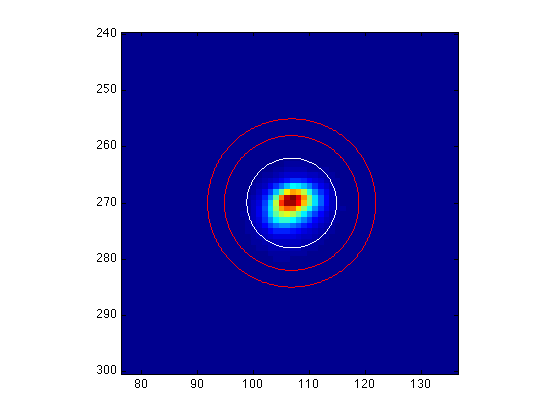
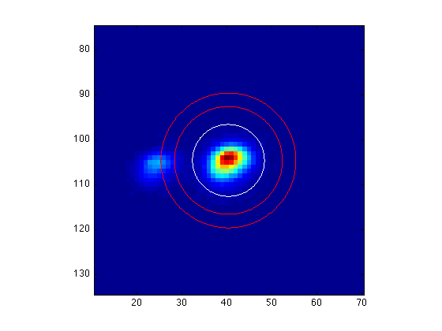
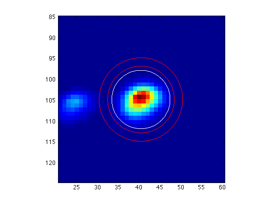
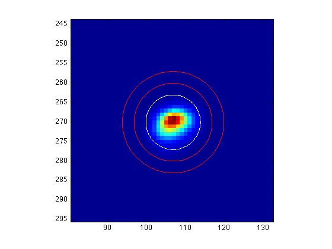

Measuring the flux
Contents
Two MATLAB procedures are used to get magnitudes. Findstars finds the stars in an image and lists them. Aper measures the fluxes of a star at a given position.
Assuming we already found all of the stars by the function findstars:
findstars('im.out', im, 300, 10);
Source 1: ampl=7542.2, x=106.8, y=270.0 Source 2: ampl=3823.7, x=432.9, y=171.3 Source 3: ampl=2969.4, x=287.9, y=194.5 Source 4: ampl=2246.2, x=186.2, y=126.4 Source 5: ampl=1080.3, x=40.4, y=104.6 Source 6: ampl=1076.2, x=265.3, y=8.3 ... ... Total 18 sources Returning table of: center X, center Y, amplitude, major axis, minor axis, position angle See also file im.out
aper(image, x_coor, y_coor, r_aper, inner, outer, gain)
Now it's time to measure the flux of the located stars. One way to do this is using the function aper, which calculates flux for individual star: (K is the number of electrons/ADU for the CCD)
[flx,err] = aper(im, 106.8, 270.0, 8, 12, 15, K)
flx = 2.0064e+04 err = 1.9393e+03
Here we set the radius of the aperture for the flux measurement = 8, The inner and outer radii of a ring through which the program will measure the sky brightness = 12 and 15. In this case (Source 1) these parameters work well. However, in some cases (e.g. Source 5) we may need to make some changes:
[flx,err] = aper(im, 40.4, 104.6, 8, 12, 15, K)
flx = 2.8934e+03 err = 1.0471e+03
The ring area includes another star, which will contaminate the sky measurement. Let's try another set of parameters:
[flx,err] = aper(im, 40.4, 104.6, 7, 8, 10, K)
flx = 2.6011e+03 err = 845.5168
This looks much better. There's no rule of thumb, just trial and error!
all_aper(output_file, input_file, image)
A much easier way is to use the routine all_aper, which takes the output file of findstars, reads all stars found by findstars, and executes aper for each source in the list. The information of flux is written into the file im_flux.out.
all_aper('im_flux.out', 'im.out', im);
Photometry good (1) or bad (0) for source 1?
While running, all_aper will show each star with the aperture for the flux measurement (white circle) and the ring for the sky brightness measurement (red circles). You need to decide whether the photometry is good (enter 1) or bad (enter 0) for each source.
Note that the user-defined parameters of aper are now defined in all_aper. You need to edit the file and change these parameters to get the most optimized result.
After giving every star a good/bad photometry flag, you can see the content of im_flux.out by calling
type im_flux.out
% X Y Flux Error Flag 106.82 269.99 18987.71 1661.52 1 432.89 171.25 9832.85 1270.69 1 287.88 194.47 7577.44 1151.98 1 186.17 126.41 5844.01 1060.57 1 40.45 104.62 2748.65 849.74 0 265.35 8.29 2725.78 834.43 0 94.58 95.19 2000.55 793.47 0 360.19 301.27 1192.89 688.52 1 391.20 297.68 937.46 661.15 1 44.36 192.61 811.25 667.55 0 43.08 207.82 827.94 659.93 0 24.55 105.76 788.54 676.12 0 222.13 241.19 875.29 659.64 1 92.08 68.64 789.26 666.32 1 397.59 57.85 814.46 654.71 1 285.99 112.01 754.66 621.69 1 258.42 277.39 790.17 658.14 0 474.00 248.93 731.50 609.97 1